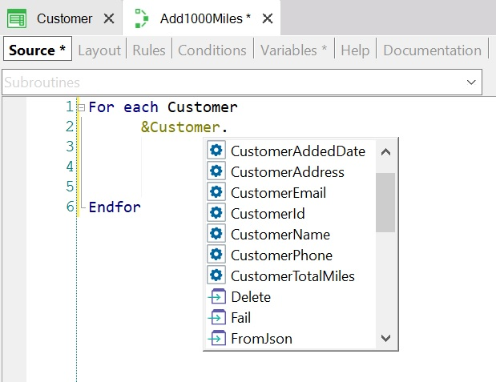

Every variable based on a Business Component type of a Transaction object, provides one property per each Transaction attribute.
Suppose you define the following Transaction as Business Component (by setting its Business Component property = True):
Customer
{
CustomerId*
CustomerName
CustomerAddress
CustomerPhone
CustomerEmail
CustomerAddedDate
CustomerTotalMiles
}
Accordingly, a Business Component data type of the Customer Transaction is automatically created in the Knowledge Base. Then, you will be able to define in any object a variable based on the Customer data type. Thus, in a Procedure object you define a variable named &Customer based on the Customer type, and in the Procedure Source you will use the &Customer variable and their properties.
See the following scenario: By way of promotion, the travel agency wants to increase 1000 miles for each customer. So, what should you do? Browse all the customers stored, and update the total miles of each one of them.
You need to write in the Procedure Source a For Each command to navigate the CUSTOMER table. To achieve this, the following image shows the Procedure Source with the For Each command mentioning the Customer Base Transaction:

Note that when you type a dot following the variable name, GeneXus offers two types of elements you can select:
Select the Load method and, in this example, the Primary Key value you have to include inside the parenthesis is the CustomerId attribute. It is available because for each customer navigated you have the CustomerId value (as well as the rest of the attributes that belong to the CUSTOMER extended table):
For each Customer &Customer.Load(CustomerId) Endfor
Once the navigated customer is loaded into memory, all you need to do is modify the customer’s total miles and save the changes.
Write the 2nd instruction inside the For Each, type ampersand, and all the variables are offered. Select the &Customer variable, type dot, and all the available methods and properties are offered. Select the CustomerTotalMiles property or attribute, and assign to it 1000 miles more than the value it already has:
For each Customer &Customer.Load(CustomerId) &Customer.CustomerTotalMiles += 1000 Endfor
You can assign values only to the same attributes that are editable on the Transaction’s Form (it means, not to inferred attributes neither attributes defined as global formulas).
Now you must save physically this update, so apply the Save method to the &Customer variable:
For each Customer &Customer.Load(CustomerId) &Customer.CustomerTotalMiles += 1000 &Customer.save() Endfor
When the Save method is executed, the rules defined in the Transaction and the automatic validations done by the Transaction are triggered. In case of error rules or automatic validations are triggered, the texts corresponding to what happened are loaded into memory in a collection. You can run through and process this collection. It will not be shown that in this example.
Now determine if the saving operation was actually successful. If it was successful, execute Commit command; if not, execute Rollback:
For each Customer
&Customer.Load(CustomerId)
&Customer.CustomerTotalMiles += 1000
&Customer.save()
if &Customer.success()
commit
else
rollback
endif
Endfor
Finally, the objective is completely developed.